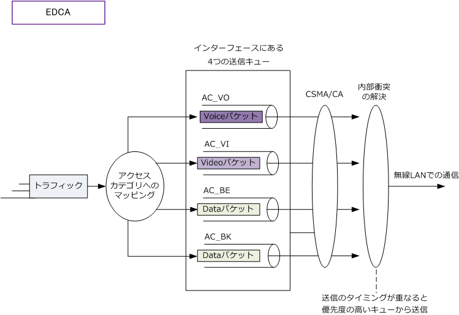
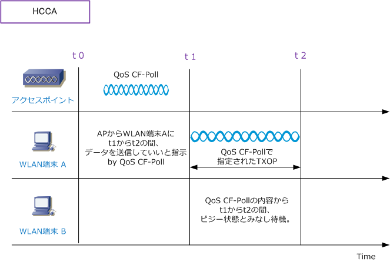
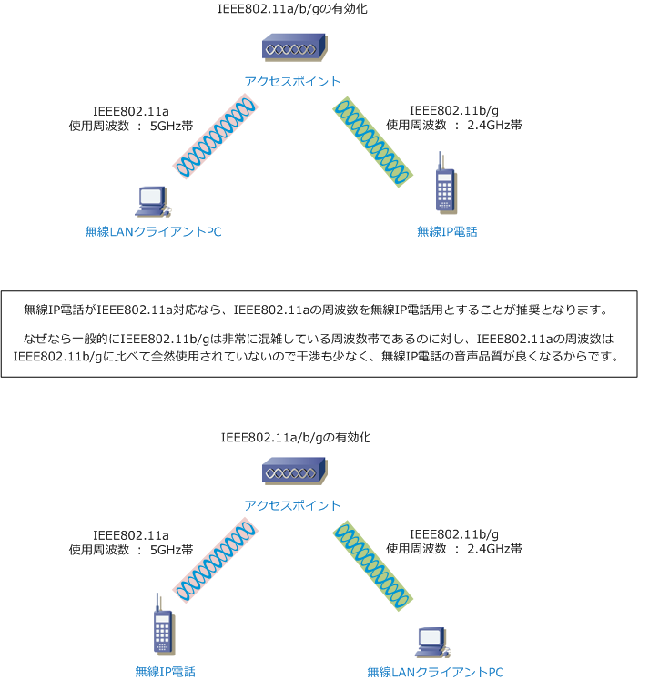

Wireless LAN - IEEE802.11e
IEEE802.11e
IEEE802.11eとは無線LAN環境においてQoSを実現するための規格です。2005年10月に策定されました。 IEEE802.11eは音声データの伝送や動画のストリーミング配信を効率よく行うために実装することが多い。 IEEE802.11eでは、QoSを実現するために2種類の方式を規定しています。1つは優先度の高いフレームを 優先して送信するようにするEDCAという方式です。もう1つは優先度の高いフレームに専用の帯域を割り 当てるHCCAという方式です。現時点では、IEEE802.11eといえば一般的にEDCAを指します。
IEEE802.11e - EDCA
EDCA（Enhanced Distributed Channel Access）では、パケットを4つのアクセスカテゴリ（AC）に分類 して各送信キューに格納します。次にそれぞれの優先度に応じてパケットを送信していきます。4つのACは 以下の通りです。優先順位は1→4であり優先度の高いトラフィックから送信キューから送信されていきます。 パケットの分類はIPパケットのTOSフィールド値、またはVLANタグのプライオリティ値に基づき分類します。
| EDCA - 4つのアクセスカテゴリ ( AC ) | ||
|---|---|---|
| 優先度 | AC | Traffice Type |
| 1 | AC_VO | Voice |
| 2 | AC_VI | Video |
| 3 | AC_BE | Best Effort |
| 4 | AC_BK | Back Ground |

優先度ごとに設定するパラメータには4種類あります。これらの値を調整することにより優先制御を行います。
| EDCA - 4つの設定パラメータ | |
|---|---|
| パラメータ | 説明 |
| CWmin | CW (Contention Window) の最小値。送信待ちの時間を決めるパラメータ。 送信待ちの時間が短い方がそのキューが送信権を得る確率が高くなるため 優先キューであればあるほど、この値を小さくする必要がある。 |
| CWmax | CW (Contention Window) の最大値。送信待ちの時間を決めるパラメータ。 送信待ちの時間が短い方がそのキューが送信権を得る確率が高くなるため 優先キューであればあるほど、この値を小さくする必要がある。 |
| AIFS | AIFS (Arbitration Inter Frame Space) はフレームの送信間隔。この値が小さいほど キューの優先度が高くなるので、 優先キューであればあるほど、この値を小さくする。 |
| TXOP Limit | TXOP (Transmission Opportunity) は、チャネルの占有時間のこと。この値が大きい ほど一度得た送信権でより多くのフレームを転送できるが、キューのリアルタイム性が 損なわれるので調整が必要。値を 0 にした場合、1 回の送信権で1フレームだけ 送信できます。「AC_BK」や「AC_BE」などは、この値を 0 にしておくことが一般的。 |
IEEE802.11eを使用する場合は、無線APだけでなく、無線LANクライアントのPCで使用するアダプタも IEEE802.11e EDCA (WMM-EDCA) に対応している必要があります。また、有線LAN側のQoSの設定値と 無線LAN側のQoSの設定値が整合性がとれる状態にする必要があります。無線と有線ではQoSが異なります。
IEEE802.11e - HCCAとは
HCCA（Hybrid coordination function Controlled Channel Access）では、無線APがWLAN端末に対して QoS CF-Pollという制御フレームを送信します。QoS CF-Pollには、WLAN端末がチャネルを使用できる期間 (TXOP)の値が入っています。各WLAN端末のフレームの特性（優先度の高い/低い）を考慮した上で、APは この QoS CF-Poll の制御フレームを送信します。送信権を得たWLAN端末だけが、割り当てられた時間だけ 送信することができるので、他の許可されていないWLAN端末のフレームと衝突することなく通信できます。

無線APが各WLAN端末をコントロールすることになるので、実装はEDCAより大変となりますが、厳密な QoS制御を実装することができます。難点は、HCCAに対応している無線LAN製品がほとんどないことです。 HCCAによるQoSを実現するためには、APだけでなくWLAN端末でもHCCAに対応している必要があります。
無線LAN設計 - そもそもQoSのまえに・・・
無線LANネットワークにおいて、無線LANクライアントPCと無線IP電話が混在する環境の場合は、そもそも QoS以前に大切な基本設計事項があります。それは、データトラフィックと音声トラフィックを送受信する 周波数を完全に分離するということです。アクセスポイントは一般的に、その1つのAPで IEEE802.11b/g と IEEE802.11aの両方の規格を有効にすることができます。現在の無線IP電話はIEEE802.11b/g対応のものが 多いので、無線IP電話で送受信される音声トラフィックをIEEE802.11b/gの周波数でデータ伝送を行って、 無線LANクライアントPCで送受信するデータトラフィック、802.11a の周波数で伝送をさせるようにします。

例えば、IEEE802.11b/gの周波数でデータトラフィックと音声トラフィックの両方が流れていて音声品質が 悪くてどうしようといった場合、先ず上図の通り周波数を分離しましょう。それだけで品質は改善されます。
しかし「無線IP電話」と「無線LANクライアントPC」の両方ともIEEE802.11b/g しか対応していない場合や IEEE802.11a でデータ伝送している無線LANクライアントPCにおいて、フレームの優劣をつけたい場合等は IEEE802.11e によるQoSの実装を行いましょう。EDCAによる適正な実装を行えば、要件は満たせるでしょう。
※ 上記構成では1台のAPに対する無線IP電話の同時接続数は10～15、無線クライアントPCの同時接続数も10～15にすることが推奨。 ※ 1台のAPへのクライアントの同時接続数はmax-associationsコマンドで、SSIDにアソシエートする最大数を制限することで実現。 ※ 802.11bでの同時通話数のCiscoの推奨はAPあたりの同時G.711コールを7以下、APあたりの同時G.729コールを8以下にすること。 ※ 802.11a, gでの同時通話数のCiscoの推奨はAPあたりの同時コールを20以下とすることにしているが実際には10～15が妥当です。
シスコ無線LANソリューションでは、Autonomous APではSSIDに対してアソシエートする最大数を制限 することができますが、WLCを用いるCAPWAP AP においてはSSIDごとの最大数の制限はできません。
なお、WLCを用いる無線LAN構成の場合、無線LAN クライアントPCのSSIDにはロードバランス設定を 有効にして、APの負荷分散を行うのが一般的です。
一方で、無線IP電話のSSIDには、ロードバランスの 設定は無効にします。なぜならロードバランシング が有効になっている無線LANではローミング遅延が 発生する事から遅延に敏感なアプリに適さないから。